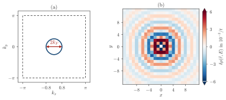
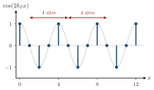

Page 8 of 15 of this session
9.6a Impurities as diagnostics I, Friedel oscillations in a metal
How does the density around one impurity in a metal decay, and what does this decay tell us about the metal? We will now see that it oscillates with the wavevector \(2k_F\), the diameter of the Fermi surface, under an envelope that falls as \(1/|x|^d\) in \(d\) dimensions. This is the Friedel oscillation (9.9).
\[\chi_0(q) = \frac{1}{N} \sum_k \frac{n_F(\varepsilon(k)) - n_F(\varepsilon(k+q))}{\varepsilon(k+q) - \varepsilon(k)}. \tag{9.4}\]
This is the static Lindhard function of Section 9.4a. The sum runs over the \(N\) momenta \(k\) of the Brillouin zone, \(\varepsilon(k)\) is the band and \(n_F\) is the Fermi-Dirac function. Only pairs of states on the two sides of the Fermi surface contribute, \(\chi_0(q)\) is positive, and at \(q\to0\) it is the density of states \(D(E_F)\).
A real local impurity is the most physical realization of a perturbation. Four case studies follow, one for each broad class of ground state that we have built in the course. These are metals, superconductors, topological matter and quantum magnets. In each case the diagnostic logic is the same. We perturb the system locally, and we obtain the nature of the ground state from how the effect of the perturbation decays in space.
Let us start with a metal. An impurity is a local shift of the onsite energy. If we add one to a Hamiltonian with translational symmetry, this symmetry is necessarily broken. Note, however, that perturbation theory itself never needed translational symmetry, since equations (9.2) and (9.3) are valid for any \(H_0\) and any \(V\). If we apply them directly to the local density of states, we obtain a response that is proportional to matrix elements between states at the Fermi surface. For a generic band, close to a parabolic one, the oscillation that results is set only by the Fermi wavevector.
To see this in an exact way, note that the static Lindhard function of a one-dimensional free-electron gas has the closed form
\[\chi_0(q) = \frac{m}{\pi\hbar^2 q}\ln\left|\frac{2k_F + q}{2k_F - q}\right|,\]
which is smooth everywhere except for a logarithmic non-analyticity at \(q = 2k_F\). This is the same nesting singularity that we found in Section 9.4b. A standard result of Fourier analysis is that a non-analyticity of a function \(\chi_0(q)\) at a wavevector \(q^\star\) gives an oscillating tail with an algebraic decay in its real-space Fourier transform. The period of this tail is fixed by \(q^\star\), and its envelope is set by the type of the singularity. We apply this to the change of density induced by the impurity, \(\delta n(x) = -\int \frac{dq}{2\pi}\, e^{iqx}\, \chi_0(q)\, v_0\), in the Born approximation with impurity strength \(v_0\), and we obtain the Friedel oscillation.
One impurity in a metal of dimension \(d\) changes the density far from it as
\[\delta n(x) \;\xrightarrow{|x|\to\infty}\; A(v_0)\, \frac{\cos\!\big(2k_F |x| + \varphi_0\big)}{|x|^{\,d}} \qquad (d = 1,2,3). \tag{9.9}\]
The period \(\pi/k_F\) is set only by the Fermi surface, and, for a Fermi surface with no flat parts, the power of the envelope only by the dimension. The amplitude \(A(v_0)\) and the phase \(\varphi_0\) depend on the impurity.
The steps From the singularity of chi0 at 2kF to the 1/x tail
We take the simplest case, the one-dimensional closed form of \(\chi_0(q)\) above, at zero temperature. In the Born approximation the density change is proportional to \(v_0\) times the Fourier transform
\[F(x)=\int\frac{dq}{2\pi}\,e^{iqx}\,\chi_0(q)=\frac{1}{\pi}\int_0^\infty \cos(qx)\,\chi_0(q)\,dq,\]
where we used that \(\chi_0(q)\) is even in \(q\). Near \(q=2k_F\) the closed form is a logarithm plus terms that stay finite,
\[\chi_0(q)\approx-\frac{m}{2\pi\hbar^2k_F}\,\ln|q-2k_F| .\]
We integrate by parts once. The boundary terms vanish, since \(\sin(qx)\) is zero at \(q=0\) and \(\chi_0(q)\) goes to zero at large \(q\), so
\[F(x)=-\frac{1}{\pi x}\int_0^\infty \sin(qx)\,\chi_0'(q)\,dq .\]
The derivative of the logarithm is a simple pole, \(\chi_0'(q)\approx-\frac{m}{2\pi\hbar^2k_F}\,\frac{1}{q-2k_F}\), and the rest of \(\chi_0'(q)\) has no pole, so it only adds terms that fall faster than \(1/x\). For the pole we use the principal value \(\int\frac{\sin(qx)}{q-q_0}\,dq=\pi\cos(q_0x)\) for \(x>0\), and we get
\[F(x)\approx\frac{m}{\pi\hbar^2}\,\frac{\cos(2k_Fx)}{2k_Fx}.\]
This has the form of (9.9) for \(d=1\), meaning that the period \(\pi/k_F\) comes from where the singularity sits, and the power \(1/x\) from its type, a logarithm whose derivative is a simple pole. The integral can also be done in full, and it gives
\[F(x)=\frac{m}{\pi\hbar^2}\left[\frac{\pi}{2}-\mathrm{Si}(2k_F|x|)\right],\qquad \mathrm{Si}(z)=\int_0^z\frac{\sin u}{u}\,du .\]
For large \(z\) we have \(\mathrm{Si}(z)\approx\pi/2-\cos z/z\), which gives the same tail, and on the impurity the value is finite, \(F(0)=m/(2\hbar^2)\). In the free-electron gas of \(d=2\) and \(d=3\) the singularity sits on the whole circle or sphere \(|q|=2k_F\), which is made of the vectors that join opposite points of the Fermi surface. The same Fourier transform gives the envelopes \(1/|x|^2\) and \(1/|x|^3\), which we state here without the derivation. These powers hold when the Fermi surface has no flat parts. The half-filled square lattice with first-neighbor hopping has a flat, nested Fermi surface, and along the diagonal of the lattice its envelope falls more slowly than \(1/|x|^2\).
The oscillation has a universal wavevector that is fixed only by the Fermi surface, which is \(2k_F\) in 1D, or more generally the diameter of the Fermi surface. It has an algebraic envelope, whose power depends on the dimensionality \(d\), and it has an amplitude and a phase that are not universal and are set by the impurity strength and by microscopic details. This closes the argument that we started in Section 9.4b. The same singularity at \(q=2k_F\) in \(\chi_0(q)\), which we found there as an instability channel, gives here a long-ranged real-space oscillation with a power-law decay, and not a real instability. The reason is that a single local impurity is a perturbation that is much too weak to reorganize the whole Fermi sea. The divergence in \(\chi_0(q)\) only makes its Fourier partner decay slowly instead of exponentially. The two-dimensional case is drawn in Schematic 9.10.

g4_friedel_square.py

To see this in a concrete case, we have drawn the plane above. The widget below takes a ring, and Section 9.6b takes a chain and an insulator.
On a stepped Au(111) surface, thermovoltage STM is used to study the local density of states at the Fermi level, which forms standing waves on the terraces between the steps. The band diagram of Au(111) gives the expected period \(\lambda_F/2=1.8\) nm, while the measured period varies between \(1.5\) and \(2.1\) nm with the width of the terrace. The article says that this result is understood from the superposition of the incident and the reflected electron waves, which have the period \(\lambda_F/2\). It also says that the change of the period is a direct consequence of the decay of the Friedel oscillations. The measurement is in this article.
In our own reading, which is not in the article, \(\lambda_F/2=\pi/k_F\) is the period of (9.9), since \(\lambda_F=2\pi/k_F\). The local density of states at the Fermi level has this period too, as in Schematic 9.10. The scatterer here is a step, which is a line on the surface, and not a single impurity.
A chain has the Fermi wavevector \(k_F=\pi/4\). Around an impurity the density oscillates as
\[\delta n(x)\propto\cos(2k_Fx).\]
What is the period, in units of the lattice constant?
Show the answers
- A. ✗ False
This is false. The Fermi wavelength is \(2\pi/k_F=8\), but the density oscillates as \(\cos(2k_Fx)\). The period of this function is \(4\), so \(8\) is the period of the wavefunction.
- B. ✓ True
This is true. The singularity of \(\chi_0\) is at \(q=2k_F=\pi/2\), so the density goes as \(\cos(\pi x/2)\). This repeats every \(4\) lattice constants.

The function \(\cos(2k_Fx)\) for \(k_F=\pi/4\) on the sites of the chain. The pattern \(1,0,-1,0\) repeats after \(4\) sites. - C. ✗ False
This is false. A period of \(2\) means \(2k_F=\pi\), which is half filling with \(k_F=\pi/2\). For \(k_F=\pi/4\) the oscillation is twice slower.
One impurity in a metal of dimension \(d\) changes the density far from it as
\[\delta n(x) \;\xrightarrow{|x|\to\infty}\; A(v_0)\, \frac{\cos\!\big(2k_F |x| + \varphi_0\big)}{|x|^{\,d}}.\]
We compare the envelope at the distances \(x\) and \(2x\) for \(d=2\). By which factor does it decrease?
Show the answers
- A. ✗ False
This is false. A factor \(2\) is the decay \(1/|x|\) of \(d=1\). In \(d=2\) the envelope falls as \(1/|x|^2\), so doubling \(x\) gives \(1/4\).
- B. ✓ True
This is true. With \(d=2\) the envelope is \(1/|x|^2\). At \(x\) and \(2x\) the ratio is \(2^2=4\), and it is a power law because the Fermi surface makes \(\chi_0\) non-analytic.
- C. ✗ False
This is false. A factor \(8\) is the decay \(1/|x|^3\) of \(d=3\). In \(d=2\) the exponent is two, so the decrease is \(2^2=4\).
Each map shows the change of the LDOS at the Fermi level around one impurity. The three metals are the same square lattice, filled up to three Fermi levels. The color scale is the same, in units of \(10^{-3}/t\). Which metal has the largest Fermi circle?
Show the answers
- A. ✗ False
This is false. The rings repeat about every \(7\) sites, the longest period of the three. This metal has the Fermi level \(-3.8t\), where \(k_F=0.45\) and \(\pi/k_F=7.0\), so its circle is the smallest.
- B. ✓ True
This is true. The rings repeat every \(3\) sites, the shortest period of the three. The change of the LDOS oscillates as \(\cos(2k_Fr)\), so the period is \(\pi/k_F\), and \(\pi/k_F=3\) gives \(k_F=\pi/3=1.05\), at the Fermi level \(-3t\). In this way an STM map gives the size of the Fermi surface.
- C. ✗ False
This is false. The rings repeat about every \(4\) sites. This metal has the Fermi level \(-3.4t\), where \(k_F=0.80\) and \(\pi/k_F=3.95\), so its circle is smaller than the one of the rings that repeat every \(3\) sites.
A spinless chain has \(0.2\) electrons per site, and one impurity sits at \(x=0\). Find the period of the Friedel oscillation of the density. Then find the factor by which its envelope falls from \(x=10\) to \(x=40\), and the same factor for a plane, which is \(d=2\) in (9.9).
Solution
In a spinless chain at zero temperature the filled states are the momenta \(|k|<k_F\) of the zone \(-\pi<k\le\pi\), so the number of electrons per site is \(n=2k_F/2\pi=k_F/\pi\). For \(n=0.2\) this gives \(k_F=0.2\pi\). The density oscillates as \(\cos(2k_Fx)=\cos(0.4\pi x)\), which has the period
\[\frac{2\pi}{2k_F}=\frac{\pi}{k_F}=5\ \text{sites}.\]
In \(d=1\) the envelope falls as \(1/|x|\), so from \(x=10\) to \(x=40\) it falls by \(40/10=4\). In \(d=2\) it falls as \(1/|x|^2\), so by \(4^2=16\). We can check this with an exact diagonalization of a chain of \(4001\) sites at this filling, with an impurity of \(0.1t\). It gives the period \(5.0\) sites, and a fit between \(10\) and \(100\) sites gives a power of the envelope close to \(1\).
This is how a map around an impurity is read. The distance between two ripples gives \(k_F\), and with it the filling. An STM map gives the same period, since the local density of states at the Fermi level oscillates with the same \(2k_F\).
Try it. Run the cell with mu = 3.8, where the Fermi circle is small, and measure the distance between two ripples of the LDOS. Then set mu = 3.0 and run it again. The Fermi circle is larger, and the ripples become shorter, from about 7 sites to about 3 sites, since the wavelength is \(\pi/k_F\).
- In Section 9.6b the same oscillation is computed in a chain, and an insulator gives no slow tail.
- In Section 9.7 a superconductor has no Fermi surface, so an impurity gives no Friedel tail, and a magnetic one gives a bound state.
- In Section 9.9 the impurity in a quantum spin liquid is the same mathematical problem, with spinons in place of electrons.